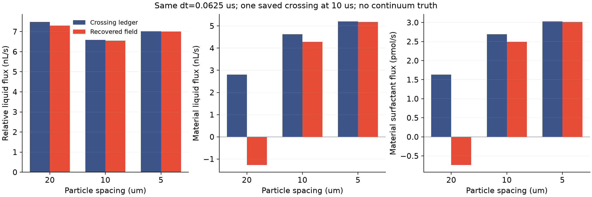

VariDrainage 项目首页网格更细后，
局部流量的两种算法接近了吗？
同一条 x=240 微米切面、同一时间步 0.0625 微秒、同一时刻 10 微秒。新增 5 微米网格终态观测，复用已有 20／10 微米结果。
一边数穿过去多少，一边从局部状态重建
蓝色是运动单元穿过切面的离散账本；红色是用保存的膜厚、粒子速度与压力梯度重建的流量。“相对液流”表示液体相对粒子的流动，“随粒子输运”表示运动本身带过切面的液量或表面活性剂。正负号表示方向，不能只比较绝对大小。

白底红蓝；实际保存步，无重跑轨迹、拟合或新增物理参数。液量单位 nL/s，表活单位 pmol/s。矢量 PDF两种算法相差多少？
| 网格／微米 | 相对液流 | 随粒子液量 | 随粒子表活 |
|---|
| 20 | 2.427% | 145.319% | 145.318% |
| 10 | 0.615% | 7.476% | 7.476% |
| 5 | 0.138% | 0.396% | 0.396% |
差异 = |重建值 − 账本值| / |账本值|。这衡量两种离散观察的差异，不是相对真实实验的误差；分母接近零时也不宜单看百分比。
结论边界：这是一个保存步的非相容场重建。两种观察涉及不同的时间层和运动单元穿越，接近或不接近都不能单独证明连续物理通量、牵引力或动态空间收敛。第二组更小时间步尚未纳入；没有改变原来的时间／空间验收门槛。
下一步由完整配对决定
先完成 5 微米网格的时间配对，再用原始重叠区域范数比较膜厚变化与位移。如果空间检查仍失败，就定位离散或物理通量问题；不会用单个切面结果替代验收，也不会仅因差异减小就放大计算规模。原 50／200 微秒及交换系数、薄膜元厚度比、整体条纹和保留工况实验仍待完成。
首组实际粒子、守恒与机械功报告 · 已有空间失败和原始参考数据
计算依据与复现
两个已有 10 微米切面按原公式重算并核对；新增原生步数为 0，只处理已完成首组。结果摘要 · 全部带符号原始数值 · 处理前冻结输入与源码哈希 · 诊断计划 · 后处理代码。
5 微米完整原始数据和独立审计在首组报告；旧参考数据保留在已有空间报告。完整 C1 与物理实验尚未完成。